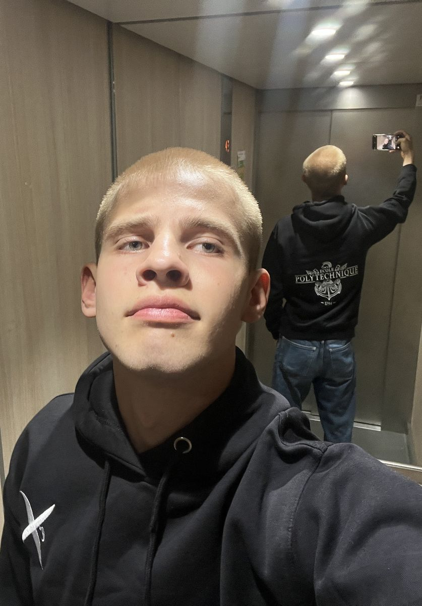
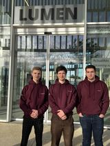
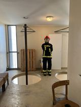
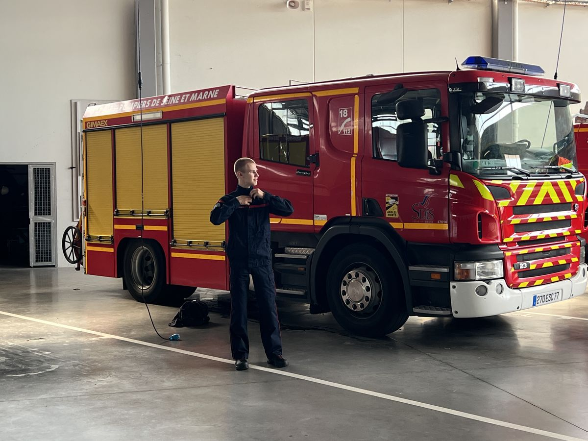
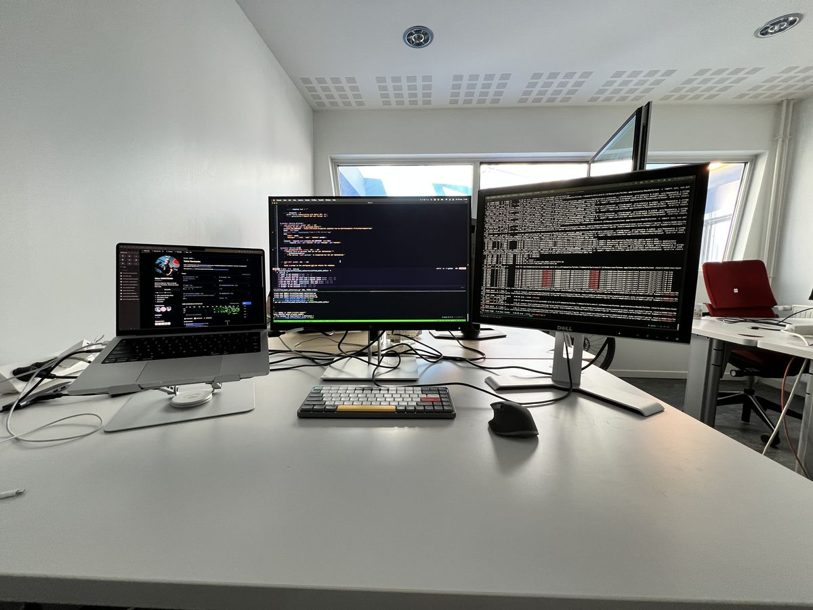
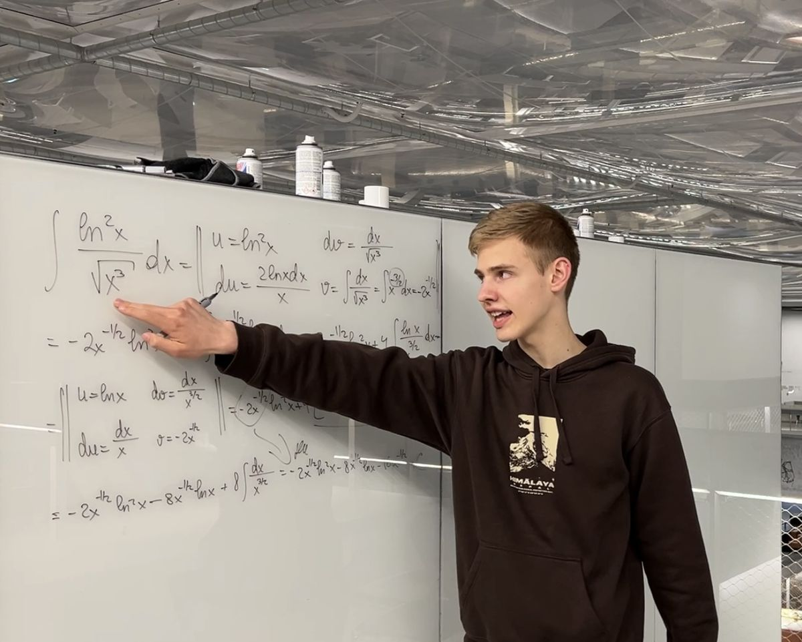
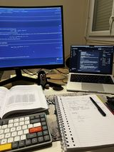
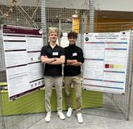
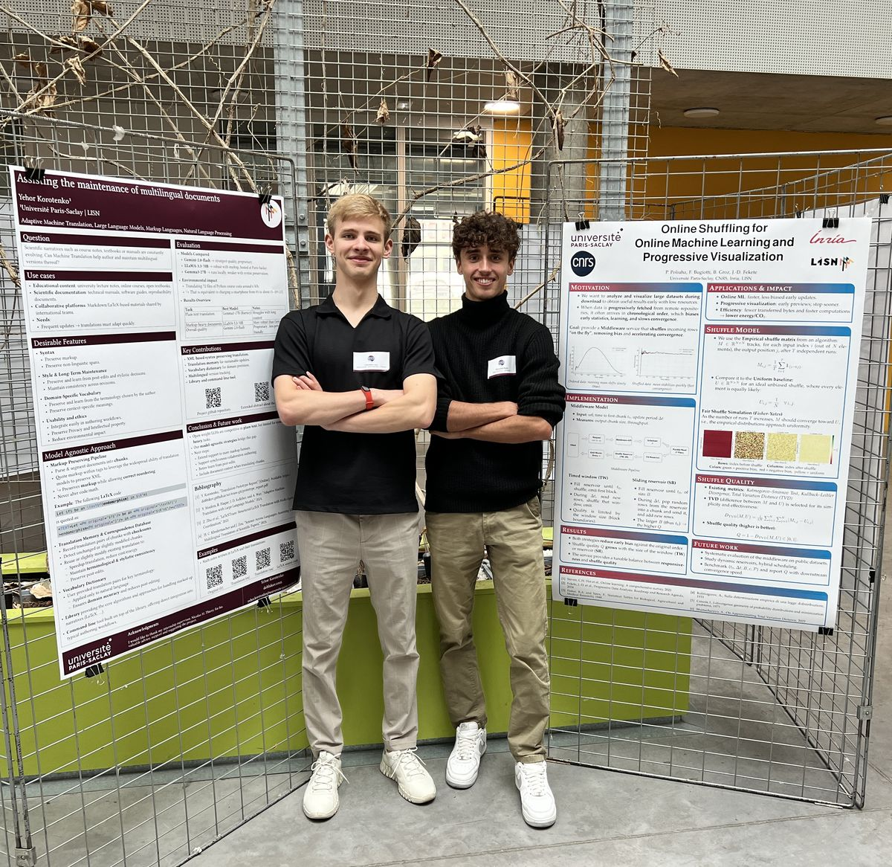

Jeune homme curieux, j'ai plus de six ans d'expérience entre recherche, freelance et industrie. J'étudie actuellement à l'École Polytechnique de Paris (X26), dans le cycle ingénieur polytechnicien.
Je travaille actuellement au Service départemental d'incendie et de secours de Seine-et-Marne (SDIS 77), où je conçois et entraîne des modèles d'apprentissage automatique et développe des services numériques. J'ai de l'expérience en développement full-stack, en contribution open source, en apprentissage automatique et en recherche mathématique, avec des travaux récemment présentés aux JDSE 2025 et au Ukrainian Mathematics Day.
Cycle ingénieur polytechnicien

École Polytechnique · X26Licence — double diplôme Mathématiques et Informatique
Moyenne : 18,04 / 20 — 3e sur 57 étudiants — bourse FMJH
Cours suivis : calcul, analyse, algèbre linéaire, algèbre générale et théorie des groupes, probabilités et statistiques, algorithmique et structures de données, programmation fonctionnelle, topologie, programmation graphique

Université Paris-SaclayLangages de programmation : Python, Rust, OCaml, C++, C#, JavaScript
Développement web : ASP.NET Core, Angular, React, MySQL
Science des données : Pandas, Matplotlib, NumPy, scikit-learn
Autres outils : Requests, Selenium, SQL
Gestion de versions : Git, GitHub, GitLab
Sapeur-pompier volontaire
Je consacre environ la moitié de mon temps à mon engagement de sapeur-pompier volontaire : réponse aux appels d'urgence et participation aux opérations de secours.

SDIS 77 · Sapeur-pompierIngénieur R&D
Conception et développement de modèles d'apprentissage automatique et d'outils numériques qui répondent aux besoins de l'administration du service et optimisent ses processus.

SDIS 77 · Ingénieur R&DStagiaire ingénieur de recherche
Traduction automatique adaptative au service de la rédaction collaborative et de la maintenance de grands documents scientifiques multilingues.

LISN · 2026Professeur particulier de mathématiques
Cours particuliers de mathématiques pour des étudiants de première année de licence et des lycéens, centrés sur la consolidation des bases, la résolution de problèmes et la préparation aux examens.

Cours de mathématiquesIngénieur logiciel indépendant
Traduction automatique adaptative au service de la rédaction collaborative et de la maintenance de grands récits scientifiques computationnels multilingues (suite du projet commencé au LISN). Sous contrat depuis nov. 2025.

CentraleSupélecStagiaire de recherche
Traduction automatique adaptative au service de la rédaction collaborative et de la maintenance de grands récits scientifiques computationnels multilingues.


LISN · 2025Ingénieur logiciel
Développement d'applications full-stack évolutives et d'outils interactifs pour des clients, avec une spécialisation dans les solutions sur mesure, notamment des CRM et des bots.
Ingénieur logiciel
Développement d'applications web full-stack en JavaScript, C#, React et Angular. Conception et réalisation de plusieurs bots Telegram pour l'automatisation et l'interaction avec les utilisateurs.
Korotenko, Y. (2025). Leveraging Large Language Models for Maintaining Scientific Multilingual Documents. Présentation d'un poster (résumé étendu). Junior Conference on Data Science and Engineering (JDSE) - Gif-sur-Yvette, France.
Courant : anglais, français
Langues maternelles : ukrainien, russe
Chef scout : scout depuis l'âge de 12 ans, j'organise des événements internationaux et j'y participe.
DJ : je mixe pendant mon temps libre.
En train de jouer mon set drum and bass à Dnipro, en Ukraine (juin 2023)
N'hésitez pas à me contacter par l'un des canaux suivants.
E-mail universitaire
yehor.korotenko@Telegram
dobbikov